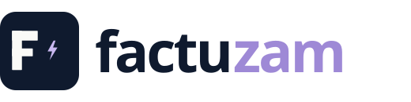
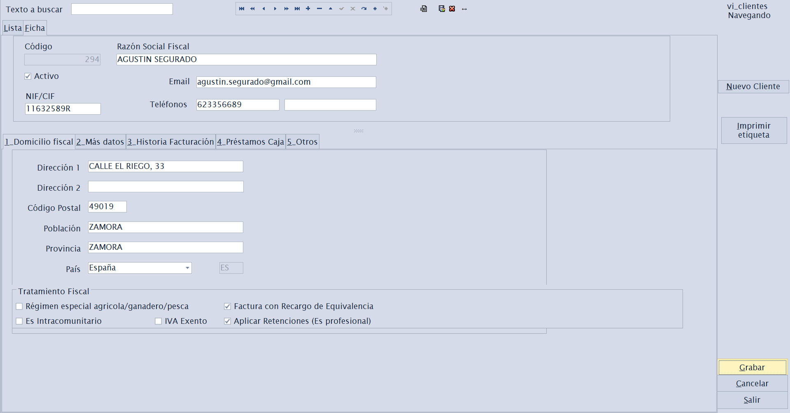

Adaptación a VeriFactu
Corrijo o amplío programas ya escritos para generar registros, QR tributario, trazabilidad, anulaciones y rectificativas.

Desarrollo y mantengo software empresarial en Delphi, Visual Basic y .NET. Adapto programas ya existentes a VeriFactu, hago migraciones de datos y trabajo por día bajo presupuesto previo.
Puedo intervenir en programas existentes, preparar importaciones, migraciones o implantar Factuzam cuando conviene partir de una solución completa. También adapto procesos a la legalidad vigente.
Corrijo o amplío programas ya escritos para generar registros, QR tributario, trazabilidad, anulaciones y rectificativas.
Traspaso o importo datos desde sistemas antiguos, hojas de cálculo, ficheros o bases SQL, con verificaciones de cuadre.
Mantenimiento, nuevas pantallas, corrección de errores, informes, impresiones, integraciones y optimización.
Evolucion de aplicaciones heredadas cuando el negocio depende de ellas y no interesa reescribirlo todo desde cero.
Desarrollo llamadas a APIs, integraciones REST, WebServices WSDL y conexión con el API de PrestaShop.
Trabajo con informes, listados, cuadros de mando y cubos de decisión BI para explotar los datos de gestión.
Factuzam cubre clientes, proveedores, almacenes, ventas, caja, informes, tallas, colores, VeriFactu y No*VeriFactu.
Cobro por día trabajado, siempre bajo presupuesto previo: alcance, jornadas estimadas, entregables y compromiso de trabajo quedan definidos.
Soy Alejandro Laorden Hidalgo, Ingeniero Técnico en Informática por la UPSA, Salamanca, promoción 2007. Mi trayectoria está muy ligada a programas de gestión reales, especialmente en entornos con tallas, colores, almacenes, facturación e integraciones.
He trabajado en aplicaciones grandes como OdaCash+ y ZapaGestion, y en proyectos para empresas como Correos y COBRA. Mi mayor orgullo es que mucho de lo que he diseñado todavía está usándose con éxito.
La prioridad es que el negocio siga trabajando. Reviso la base de datos, el circuito de ventas, la impresión y los procesos fiscales para incorporar VeriFactu con el menor riesgo posible.
Factuzam está preparado para trabajar con VeriFactu, No*VeriFactu, QR tributario, declaración responsable, cola de envíos y reglas de inalterabilidad. Gestiona tallas y colores con múltiples dimensiones de producto, hasta 5 dimensiones, y conecta con el API de PrestaShop.

Estas capturas salen del manual del programa y muestran pantallas reales de trabajo: acceso, listados, fichas y gestión de empresas.




Antes de empezar reviso el alcance, separo lo imprescindible de lo deseable y preparo una estimación por jornadas. Así sabes que se va a tocar, que queda fuera, qué entregables vas a recibir y a qué me comprometo.
Si tu aplicación de facturación está hecha en Delphi, Visual Basic o .NET, puedo revisar si conviene corregirla, migrarla o implantar Factuzam.